Notes-数字逻辑
第一章 编码
格雷码：相邻两个编码之间只有一位的差距
独热码：
BCD码：用0000～1001表示0到9，其他的不要。
1‘complement：二进制反码，每一位取反。
2'complement：二进制补码。对于一个N位的二进制数$a$,补码为$2^N-a$。
excess-3 code：余3码是和这个十进制数字对应的二进制组合再加3。
第二章 组合逻辑电路
1. 布尔代数
我们可以用布尔代数来表示逻辑门电路。然后利用析取范式（最小项之和 SOP）和合取范式（最大项之积 POS），可以化成标准形式。 Three basic logic operations ：AND、OR、NOT。 我们还有很多运算公式，基本的公式在离散数学里学过，也很显然。但是还有几个好用的公式：
- $X+\overline{X}Y = X+XY+\overline{X}Y=X+Y$
- $AB+\overline{A}C+BC=AB+\overline{A}C+BC(A+\overline{A})=AB+\overline{A}C$
- 利用对偶(dual)式进行化简：对偶式就是把与换成或、或换成与求两次对偶式和原来式子相等。
2. 逻辑函数的化简
我们有三个判断化简程度的标准：
- 文字成本（Literal cost，简称L）：对表达式中所有的文字计数即可。
- 门输入成本（gate-input cost，简称G）：与等式一一对应的实现中所用门输入端的个数。那么怎么从等式中计算呢？首先计算所有的文字，然后再加上所有运算(不包括非)所代表的门个数，再-1。
- 包括非门的门输入成本，称为GN。
我们可以用公式法化简。公式法没有办法判断是否化到了最简，只能尽力而为。 最小项（Minterm）最大项（Maxterm），这个也在离散里讲过。公式看上面。
我们还可以利用卡诺图化简。（卡诺图是重点）。卡诺图可以用于两级电路的化简。 我不知道怎么表达卡诺图的化简办法，只能说卡诺图中所有相邻的项都有公共因子，可以组合起来。我们首先确定所有的prime，然后对所有的essential作和，在用prime包含剩下的，就完成了化简。这个还是看书和动手吧，需要熟练，我的水平讲不清楚。 卡诺图化简有几个概念：
- 方格(rectangle)：在卡诺图中指的是包含2^m个小方格的矩形。
- 蕴含项(implicant)：函数对某个乘积项的所有最小项取值为1，成为蕴含项。在卡诺图中就是由1组成的方格。
- 主蕴含项(prime implicant)：如果从该乘积项P中移除任何一个变量，得到的乘积项不再是函数的蕴含项，则P称为主蕴含项。在卡诺图中就是由1组成的尽可能大的方格。
- 必要主蕴含项/质主蕴含项(essential prime implicant)：如果存在一个1的最小项，仅存在于某个主蕴含项中，那么这个主蕴含项就是必要主蕴含项。
- 无关最小项(don't care condition)：在实际情况中，某些输入组合的取值我们不关心他是0还是1,我们用X来表示。他可以辅助化简，即可以当成0又可以当成1。我们用
d表示。
3. 组合逻辑电路的设计
设计一个数字系统的步骤为。
- Specification。指定所需的行为。有几种输入、输出，并为他分配变量。
- Formulation。以布尔方程或真值表的方式对系统的输入和输出进行形式化。
- Optimization。优化（化简），比如两极电路的化简可以利用卡诺图。
- Technology Mapping。工艺映射。工艺映射指的是将逻辑图转换成可以用工艺实现的新的图。例如我们只有与非门，那我们要把我们用到的元器件都用与非门进行替换，但仍然保持原来的功能。我们得到设计的电路图。
- Verification。验证设计的正确性。这个非常复杂。
逻辑电路的设计主要分成 组合逻辑电路设计和时序电路设计，组合逻辑电路的状态只和输入有关，和上一个状态无关。
时序逻辑电路分析：根据电路从第一层向后列出每个门的方程，化简。这样就可以得到输出的方程。
4. 元件
4.0 基本的逻辑门
And、Or、Not、Xor、Nor、Nand等。
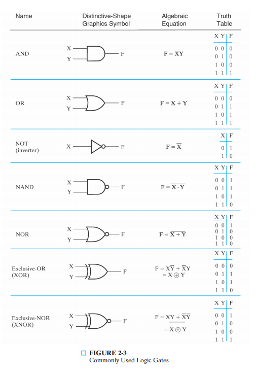
Universal Gate：可以独自实现所有布尔函数的逻辑门，比如Nor和Nand。
与、或门的开、关门特点：1 and X=X, 0 and X=0 和 1 or X=1, 0 or X = X
异或的同相、反相性质：1 xor X = ~X, 0 xor X = X
三态门：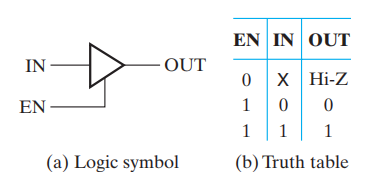
4.1 译码器Decoder
我们知道N bit可以表示2^N种编码信息。Decoder的作用就是把一个N位输入转换成M位(通常$2^{N}>=M>N$)输出的元件。
一个2-4选择器的电路：
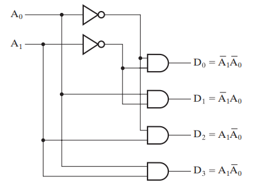
对于规模更大的选择器，我们可以用“二分法”来减少元件的数量。

译码器可以实现任何组合电路。译码器把N位输入分成了2^N最小项，然后我们用一个或门把它们连接起来。比如下面是一个二进制加法器： 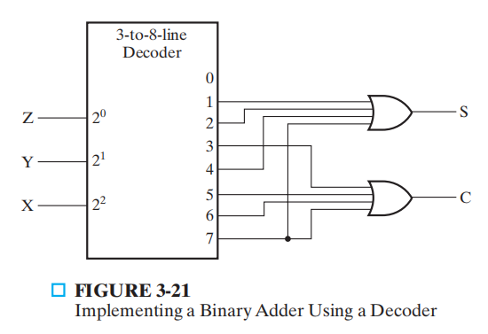
4.2 编码器Encoder
这个好像用的少一点。是Decoder的反向。可以用或门实现。比如2-4Encoder。
$A_0 = \overline {D_1}+\overline{D_0}，A_1=\overline{D_1}+D_0,A_2=D_1+\overline{D_0},A_3=D_1+D_0$
当然这是最基础的，进一步我们可以给多个不同的状态分配同一个编码，但注意不要让一个状态对应多个编码（往往由无关项导致）。
4.3 多路复用器MUX(Multiplexers)
多路复用器是一个组合电路，他的作用是从多条输入中选择一个输入。 我们来看多路复用器的一般构成： 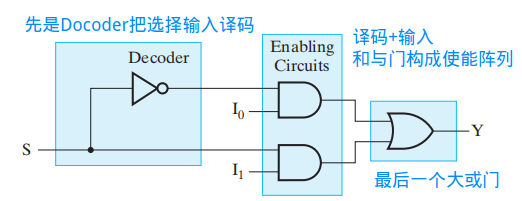
多路复用器也可以用来实现任何组合电路，有两种方法，我们还是以二进制加法器为例。 第一种非常的简单粗暴，在输入端直接把编码对应的真值表的值输入进去。这样我们在译码器的输入经过译码之后，直接选择到对应的输入。 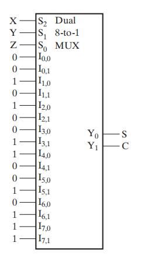 另一种方法稍微好一点。把其中的一位作为输入了。 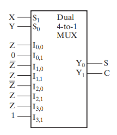
4.4 二进制加法器Binary Adders
半加器忽略了进位：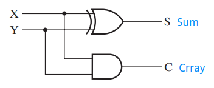
全加器可以由两个半加器组成。也可以选择化简，注意到进位的情况是Ai=Bi=1，或者Ai+Bi=1并且Ci=1。我们记{Gi,Pi}=Ai+Bi。
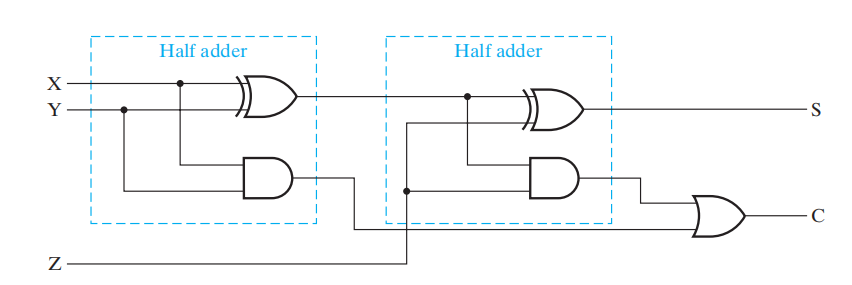
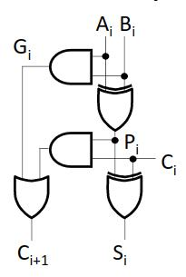
**4位行波进位加法器 4-Bit Ripple Carry Adder。**这个也比较好理解，但是存在的问题是门的延迟会积累越来越大。
- $C_1 = G_0+P_0C_0$
- $C_2=G_1+P_1C_1=G_1+P_1G_0+P_1P_0C_0$
- $C_3=G_2+P_2C_2=G_2+P_2G_1+P_2P_1G_0+P_2P_1P_0C_0$
- 以此类推。
注意到到后面这个电路的规模越来越大，也不好。所以对于更大的加法器，我们可以把行波和超前合并起来。
利用加法器，我们也可以实现减法。称为加减法器，需要分成有符号数和无符号数讨论。
- 我们首先考虑无符号数的减法 $A-B$ 。就是把输入B取反，然后在第0个进位赋1。(一个数的补码=取反+1)。如何判断正负呢？因为我们前面做得操作实际上把问题变成了 $A+2^4-B$ ，所以我们的最后一个进位 $C_4$ 如果是1，那么说明结果为正；如果为0，说明结果为负。对于两个无符号数的相加，我们需要考虑的是溢出问题，也是关注如果最后一个进位$C_4$ ,如果是1说明溢出。
- 再考虑如果我们使用补码代表有符号数$A-B$，类似的我们也把B进行取反加1的操作。这时的加减法可以一起考虑溢出和正负问题。正负很好考虑，只需要考虑结果的符号位就行了。至于溢出的话，是
正+正=负和负+负=正两种情况，这个可以等价于$C_4 \ xor\ C_3 = 1$，因为我们关注符号位的话就是$0+0=1(C_4=0,C_3=1)$和$1+1=0(C_4=1,C_3=0)$。
第三章 时序电路 Sequential Circuits
时序电路分为同步Synchronous和异步Asynchronous的。我们主要学习同步的。 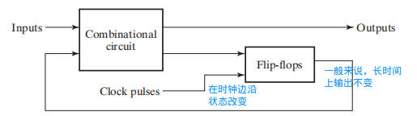 除了分析时序电路的功能，还有两个重要的参数：
- Maximum input-to-output delay：电路从输入到输出的最大延迟。要求这个最大延迟，我们要考虑每条路径上信号变化的传播延迟。每条路径的延迟由三部分组成：
- 触发器传播延迟$t_{pd},FF$
- 路径上系列们产生的组合逻辑延迟$t_{pd},COMB$
- 触发器的建立时间$t_{s}$。当一个信号沿着路径传播时，它的延迟等于这三者之和。 ️ ️
- Maximum clock frequency：电路能正常工作的最大时钟频率。
1. 存储元件
元件的标准图形：注意这里的尖三角表示边沿触发。第二行的脉冲触发，使用较少。
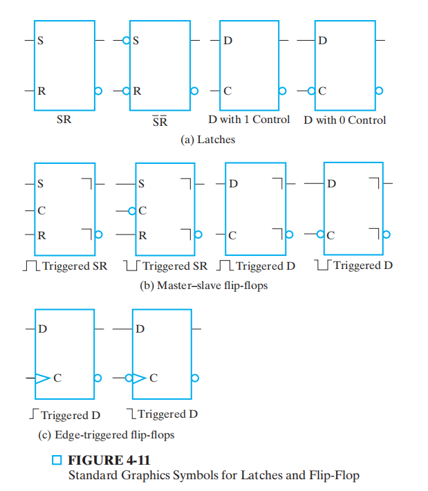1.1 锁存器 Latch
锁存器是满足下面三个条件的元器件
- 可以维持一个稳定状态。
- 稳定状态是0或1。
- 在特定条件下，状态可以再0和1之间切换。
锁存器的一般用途是用来组成触发器。 锁存起存在着空翻问题，就是在一个周期内，输出的值可以发生多次变化。以D Latch为例，当C=1的时候，输出Q的值可以随着D的变化发生多次变化。
SR Latch
或非门组成的SR Latch，是1有效。用与非门也可以组成Latch。
注意到当S=R=1的时候，两个输出都是0，这是非法的输出。
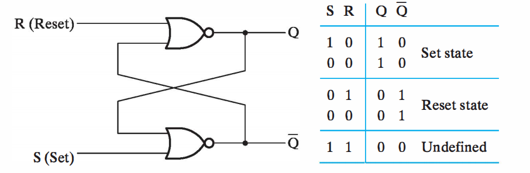
D Latch
为了防止S=R=1这种非法输出，引入D Latch。C可以是控制信号Control，也可以是时钟信号Clock。
- C=0的时候，右边SR锁存器的输入是1,1，状态不变。
- C=1的时候，右边SR锁存器的输入取决于D。 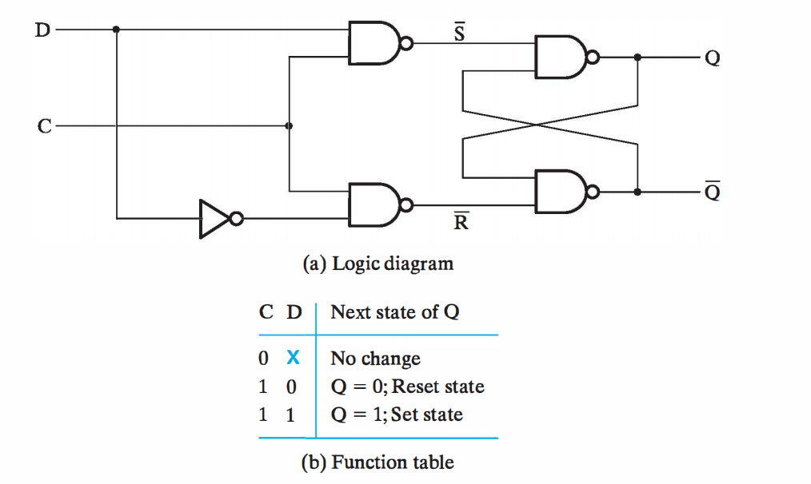
下面举一个具体的空翻例子，当C=1的时候，输出Y会不停的变化，变化频率取决于元器件的Propagation Delay Time。 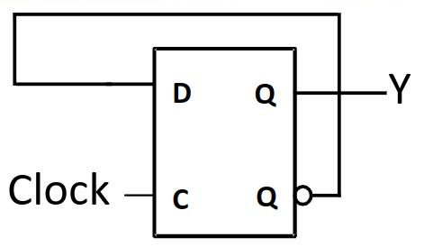
2.1 触发器 FlipFlop
通常情况下，Flipflop是由Latch组成的。构造触发器通常用两个Latch构成Master-Slave Flip-flop。 触发器有两个输出端，一个存储正常值，一个存储反值。 我们有几个时间参数Timing来评价一个触发器：
- setup time：$t_s$在时钟触发沿之前，input必须保持不变的最小时间。小于可能对输出造成错误。
- hold time：$t_h$在时钟触发沿之后，input必须保持不变的最小时间。小于可能对输出造成错误。
- minimum clock pulse width：$min(t_w)$最小的时钟脉冲宽度。小于锁存器没有足够的时间捕获输入值。
- propagation delay time：$t_{pd}$时钟触发沿和输出为一个稳定的新值之间的时间间隔。
SR Master-Slave Flipflop
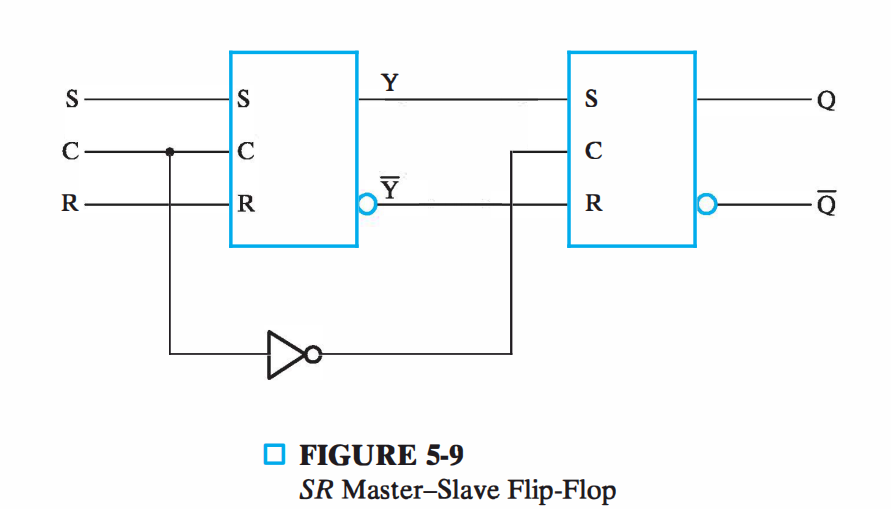使用较少。存在一次性采样问题（1s catching）。就是说在C=1的时候，我们的输入是一直可以改变并改变Y的值的。但是最后被传递给Q的只有在t=1->0时刻的值。如红框中的部分，S偶然有一个尖峰，此时C=1，那么Y就被设置成1并保存下来。然后在t=1->0的时候传递给了输出，就得到了错误的结果。这个也是边沿触发。再入红框左边的部分。还存在一个问题，就是R=S=1的非法输入问题。
Negative-Edge-Triggered D Flip-Flop
D锁存器是目前使用最为广泛的flip-flop。 考虑输出随时钟变化的情况：
- 当时钟为0时，Master不变，Slave和Master保持一致，由于Master不变所以Slave也不变。
- 从0到1时，Master开启，Slave关闭。
- 当时钟为1时，Master和输入保持同步，但是此时Slave关闭，保持不变。
- 从1到0，此时Master关闭，Slave打开，Master的值被复制到Slave中。
所以，我们的输出只有在负边沿才会改变，在除此之外的时钟周期保持稳定。如果我们想改变输出，应该在高电平时给他一个稳定的输入。 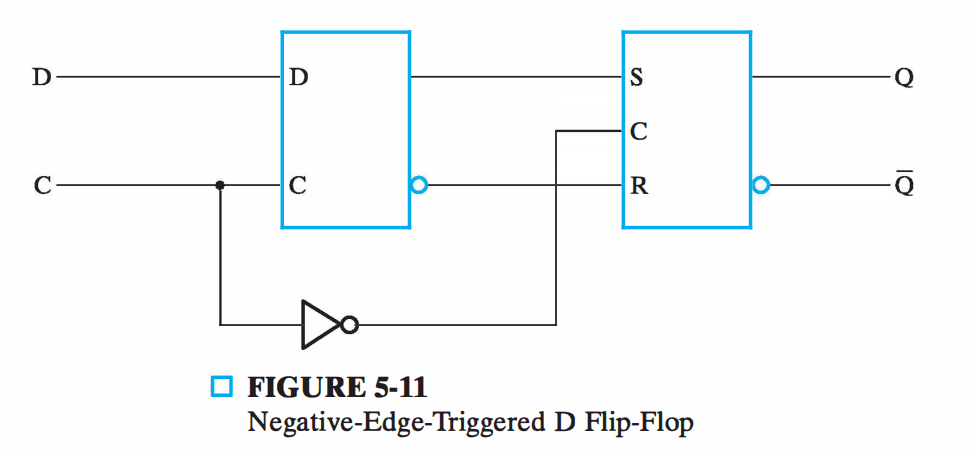
JK边沿触发器
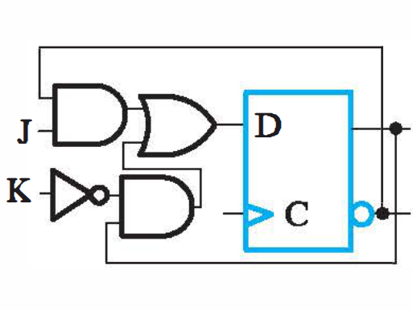- J=1, K=0：Set
- J=0, K=1：Reset
- J=1, K=1：取反
- J=0, K=0：保持
怎么分析呢？举个例子：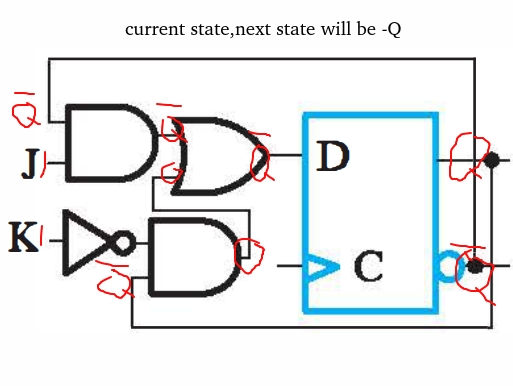
T触发器
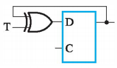 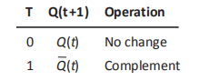
2. 时序电路分析
时序电路的行为是由电路的输入input，输出output和状态state决定的。 我们对时序电路的分析，就是要确定输入输出和状态的时间序列。
2.1 同步时序电路的描述
同步时序电路的结构和功能，可用三组逻辑函数表达式描述。
-
输出output函数表达式：是一组反映电路输出Z与输入x和现态y之间关系的表达式。
Zi = fi(x1，…，xn ,y1,…，ys) i=1,2,…,m（Mealy型电路，输出和输入有关)Zi = fi(y1，…，ys) i=1,2,…,m（Moore型电路，输出和输入无关） -
激励excitation函数表达式： 激励函数又称为控制函数，它反映了存储电路的输入Y与外部输入x和电路状态y之间的关系。其函数表达式为
存储电路的输入Y = g(外部输入X,电路状态y) -
次态函数(Next state function)表达式：
次态y(n+1) = f(存储电路输入Y,现态y(n)) -
输入方程：在组合逻辑电路中，为触发器产生输入信号的组合电路部分，可以用一个布尔函数集合来描述。这个布尔函数集合就称为触发器输入方程( flip-flop input equation )。。这个和次态方程/激励方程差不多是一个东西。 比如$D_A=AX+BX$，描述的就是一个D触发器，输出是
A，输入部分是AX+BX的组合逻辑
2.2 state table
一般我们画二维的状态表。比如这样：（这里我们还没有对状态ABCD进行编码，编码之后就变成数字了，X是输入） 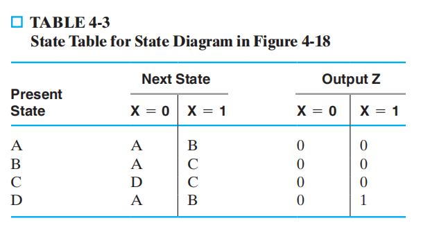
2.3 state diagrams
圆圈表示现在的状态，箭头显示了状态之间的切换。
/后面的是输出，对于Moore型，输出和输入无关，所以输出放在状态部分写；对于Meerly型，输出和输入有关，所以输出放在状态转移的部分写。
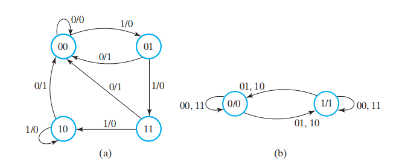
状态图的化简
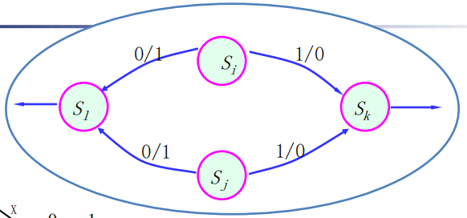次态相同的情况，这两个状态可以合并。
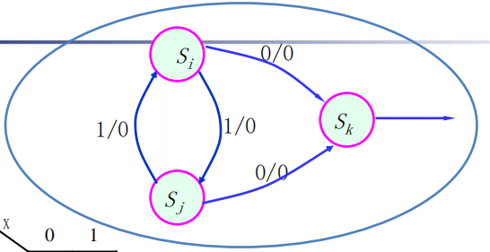这种情况，可以把Si和Sj合并，然后自循环，输出由状态决定。
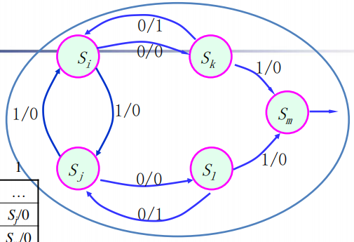可以把Si和Sj合并，Sk和Sl合并。
3. 时序电路设计 Sequential Circuit Design
- Event Description
- 我们画出状态图或者状态表State diagram state table/compressed state 要注意的是，我们可能会在不知不觉分配很多状态。这是要化简的。
- 状态分配state allocation/Assignment 比如我们现在有4个状态ABCD。 我们可以用计数的方式分配ABCD为00,01,10,11 也可以用格雷码的方式分配为00,01,11,10。这样在用卡諾图化简的时候可能有优势。 还有独热(one-hot)码，分配为0001,0010,0100,1000。这样给每一个状态都使用了一个触发器。
- choose Flip-Flop
其实我们一般都是采用D-FlipFlop。对上面的每一位编码使用一个D触发器。
- 根据次态方程（通常也就是每一个Flip-flop输入方程的组合）找出输入的组合逻辑，化简（一般用卡諾图化简），然后我们确定D-Flipflop输入端的连接（输入和所有D Flipflop输出的组合）。
- 根据输出方程我们确定输出端的连接（输入和所有D Flipflop输出的组合）。
- 处理未定义的状态Designing with Unused States
例如，我们一共有5个状态，但是我们采用了3bit的编码来表示这五个状态。那么我们会有
2^3-5=3个未定义的状态。我们按照正常的设计是不会进入这些未定义的状态的。但是事实上，外部干扰或者误操作可能会使我们进入这些未定义的状态。 那么我们应该如何handle这些未定义的状态呢？一般我们有三个选择：- 定义未定义的状态。The outputs for the unused states may be specified so that any actions that result from entry into and transitions between the unused states are not harmful.
- 添加表明出现了未定义状态的输出。An additional output may be provided or an unused output code employed which indicates that the circuit has entered an incorrect state.
- 适当调整未定义状态的下一个状态让它自己回去。To ensure that a return to normal operation is possible without resetting the entire system, the next-state behavior for the unused states may be specified →The Excitation/input equation → Optimization →Logic circuit/module mapping
4. 状态机的设计
传统的状态图的转换条件都是具体的值，而状态机图允许转换条件TC，Transition Condition是一个布尔表达式。还有输出条件OC，在Moore型中不过要注意的是，对每一种输入情况，我们要确保无效的下一个状态和输出均不会出现，也就是说每一个状态的TC和OC都需要满足这两个条件：1. 互斥 2. 覆盖所有的可能的情况。
第四章 数字硬件实现
1. 设计空间 Design Space
集成电路
数字电路采用集成电路构建而成。根据门数分类。
逻辑门的主要参数
- Fan-in：一个门可能的输入数量。
- Fan-out：一个门驱动输出的标准负载数。简单的可以认为是一个输出最多可以驱动的门数量（一个门一般会当作一个标准负载）。
- Noise margin（噪声容限）：在不影响输出的情况下允许叠加的最大的外部噪声电压。
- Cost for a gate（成本）：specifies a measure of its contribution to the cost of the integrated circuit containing it.
- Propagation delay（传输延迟）：指信号发生变化从输入到输出所需要的时间。他又分成三种，参考电压一般指的是最高电压和最低电压的平均值：
- $t_{PHL}$：输出从高电平到低电平，输入的参考电压 到 输出的参考电压 两者的时间差。
- $t_{PLH}$：输出从低电平到高电平，输入的参考电压 到 输出的参考电压 两者的时间差。
- $t_{pd}$：上面两者的最大值
- Power consumption (功耗)
2. Programming Technologies
编程的支撑技术
- 永久性的：Fuse熔断 Antifuse反熔断 Mask programming掩膜
- 非永久性的：晶体管开关控制，用存储单元控制
编程
4种可编程逻辑器件(PLD) 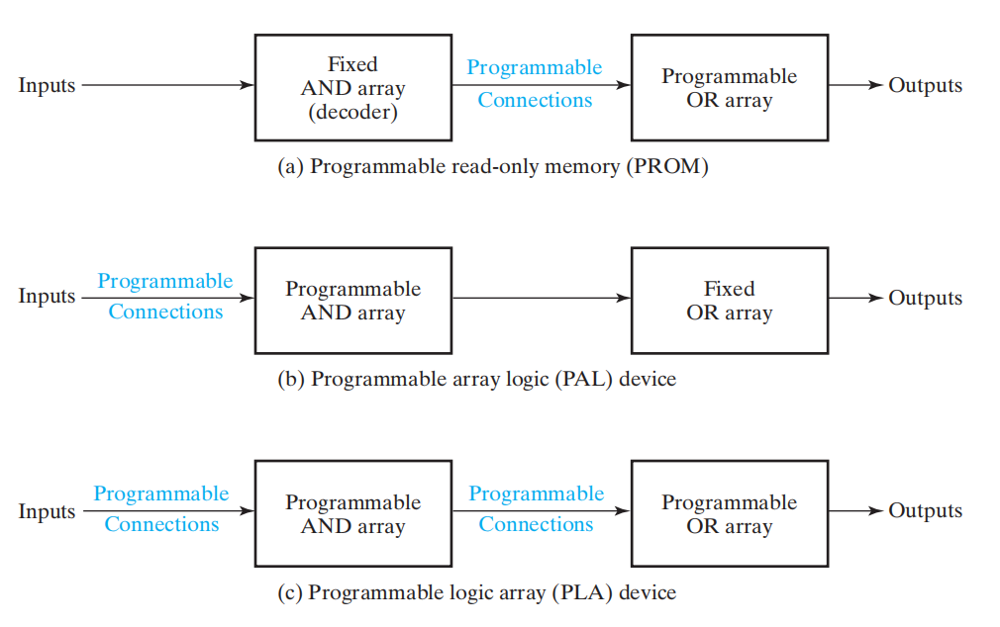
ROM：Read Only Memory。固定的与门阵列和一组可编程的或门。
2^N个固定的最小项，我们通过或门连接他们。Memory bank是我们可以编程的部分。
以下图的32×8ROM为例。左边的Decoder，可以看作是寻址的东西。寻到了会是Memory Bank中的一行，如果我们×也就是连接了那么会输出1，没有连接会输出0。
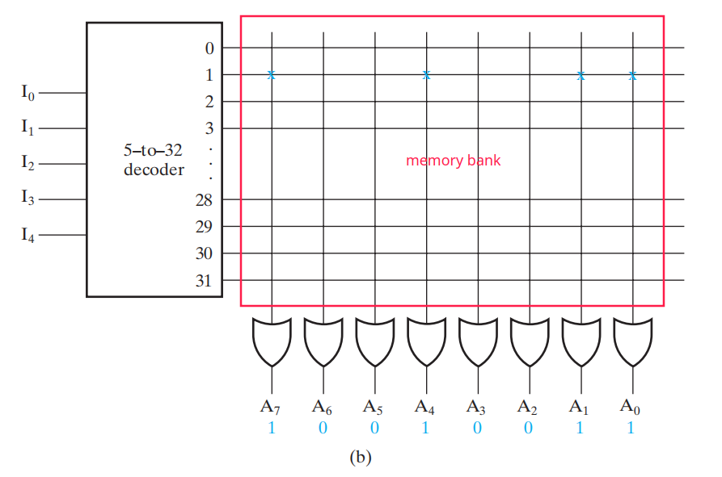
PAL：可编程的与门阵列 feeding 一组固定的或门。
用PAL设计的一般步骤：
首先给出最小项只和形式的布尔代数-利用卡諾图等方法进行优化-连接电路。比如下面的电路
就是根据X = A + BCD编程而得，其他同理。
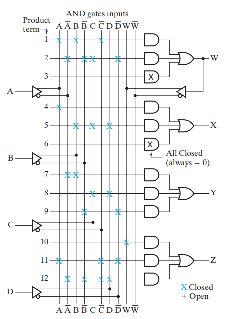
PLA：可编程的与门阵列 feeding 一组可编程的或门。
所以我们可以用卡諾图化简F和~F，化出最简单的最小项之和。左边连接最小项，右边连接和。
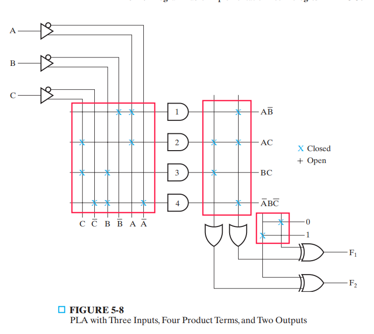
FPGA：现场可编程门阵列。大多数FPGA采用SRAM进行配置。
很多FPGA用基于查找表（Look-up Table，LUT）的可编程逻辑块来实现组合逻辑函数。查找表可以是我们上面讲述的“用MUX实现任意的组合逻辑”。比如下面这个图如果要实现f(A,B)=AB，只需要让[11]=1,other=[0]即可。
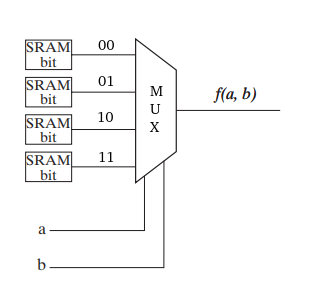
第五章 寄存器和寄存器传输
寄存器register：一个寄存器包含一组触发器。由于每一位触发器可以保存1 bit的信息，因此由n个触发器组成的n bit寄存器可以保存n bit的信息。除了一组触发器外，寄存器还要包含实现其状态转换的门电路。 计数器counter：计数器是指在时钟脉冲的激励下，能遍历预先规定好的状态序列的一种寄存器。常见的计数序列有模N计数器modulo N、BCD计数器。
寄存器微操作 Microoperations
移位微操作 算数微操作 逻辑微操作
寄存器传输操作 Transmission
R2 ⬅ R1 表示把R1的内容传输到R2
K: R2 ⬅ R1 表示在K的条件下，把R1的内容传输到R2
当然，我们默认了时钟边沿才会进行寄存器的传输。我们有RTL来描述寄存器的传输：
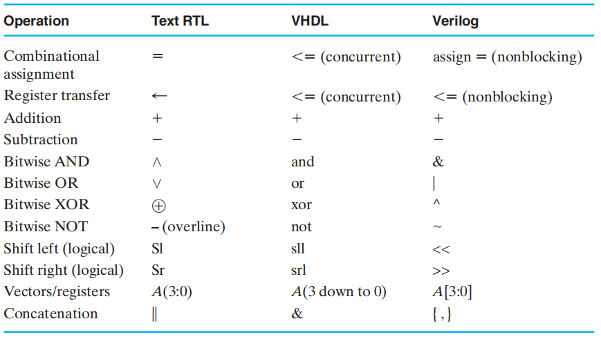
加载
加载loading：把新信息传送至寄存器称为寄存器的加载。如果所有的位都是在公共时钟脉冲同时加载的，我们称之为并行加载 parallel。
并行加载有几种实现方式。
第一种非常简单，就是给时钟信号与上一个Load位。这样当Load=0的时候，时钟信号被禁止，我们不能加载。这种技术被称为门控时钟clock gating。
但是这种技术是存在弊端的，在时钟脉冲的路径上插入额外的门，将会带来延迟，或者说是时钟偏移clock skew。所以这种方法不建议使用，尤其是在高速系统上。
第二种方法其实是利用一个1-2选择器。选择加载的是输出Q还是新的输入D。虽然电路复杂了一点，但是比较好。
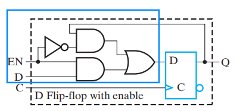
移位
位移寄存器shift register，指的是能把自己存储的内容进行单向或双向位移的寄存器。 像下面这样，就是4位串行右移寄存器。他可以把自己的内容一位一位的输出出来。 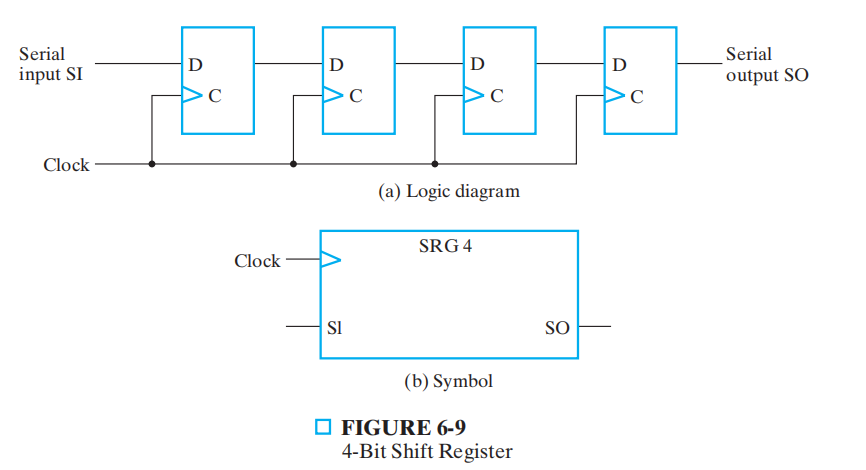
计数器Counter
计数器分为两个类型： 行波计数器Ripple Counter：某些触发器的输出值的改变可以改变其他触发器中的值，也就是说某些触发器C输入端的值不是公用的时钟脉冲，而是其他触发器的输出信号。可以看到他十分简单，但是同样的时钟不统一会增加电路的不确定性。 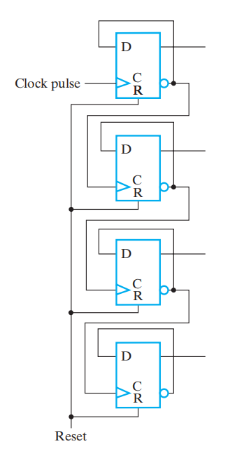
同步计数器Synchronous Binary Counters：所有的C输入端都是公用的时钟脉冲，并且计数器下一状态的值取决于当前所处的状态。 串行serial同步计数器，和行波计数器逻辑相似。不同的是把逻辑移到了输入部分D。 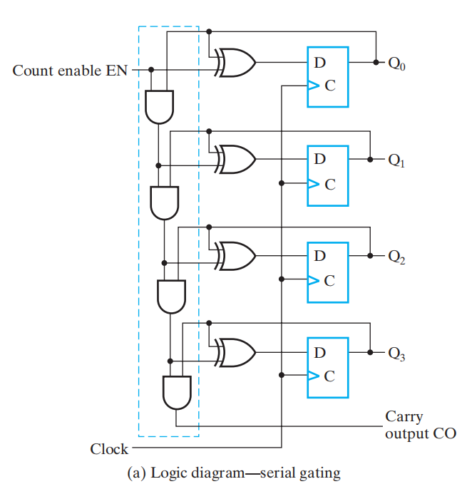 并行parallel同步计数器，并行逻辑的优点在于时延较小，对于构建高频、位数多的计数器很有帮助，（可以看到串行的到后面时延越来越大，和之前的行波进位加法器和超前进位加法器可以类比） 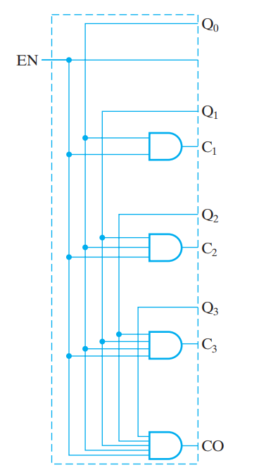 我们之前提到计数器是遍历预先规定好的状态序列，也就是说不一定是一个一个往上加。 对于一个任意状态的计数器的设计，就跟设计一个时序电路是一样的。考虑当前状态和下一个状态，列出输入方程设计电路。
第六章 内存Memory
概念： Memory: A collection of storage cells together with the necessary circuits to transfer information to and from them. Memory Organization: the basic architectural structure of a memory in terms of how data is accessed. Random Access Memory(RAM) : a memory organized such that data can be transferred to or from any cell (or collection of cells) in a time that is not dependent upon the particular cell selected.(访问时间和地址无关) Memory Address: A vector of bits that identifies a particular memory element (or collection of elements). Memory Operations: operations on memory data supported by the memory unit. 通常包括read和write。 来看memory的一般抽象，注意这里的word指的是memory的组织单元，不是2 bytes， 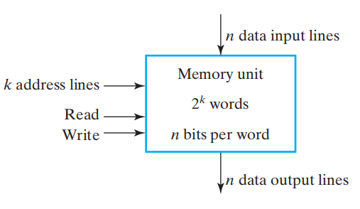
RAM的种类
- Static：information stored in latches直到断电之前，信息会被一直存储。 SRAM，读写速度快，生产成本高，多用于容量较小的高速缓冲存储器。
- Dynamic：information stored as electrical chargeson capacitors（电容）电容的能量会“泄露”，需要周期性的对存储的内容读写来刷新。 DRAM，读写速度较慢，集成度高，生产成本低，多用于容量较大的主存储器。 另一个分类
- Volatile–如果断电了存储的信息就丢失了。比如上面提到的SRAM和DRAM。
- Non-volatile–断电了存储的信息就仍然保持。比如ROM
1. SRAM ICs (SRAM集成电路)
SRAM是由SR Latch构成的，基本单元如下： 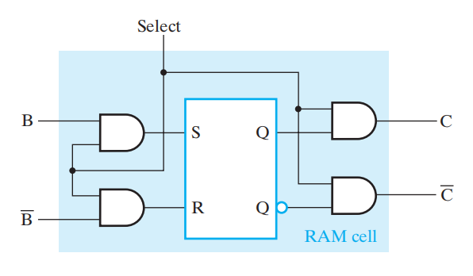 SRAM slice，可以看到每个地址有一个selector来选择它，我们可以用一个Decoder来获得它： 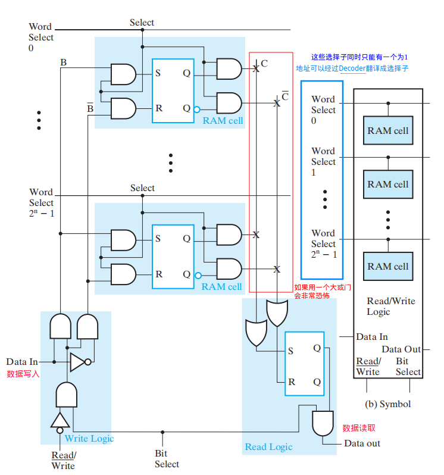
通过slice我们就可以构建一个RAM了。我们还需要一个Decoder用来选择地址，以及一个三态门（3-state buffer）比如我们构建一个8×2RAM ICs：
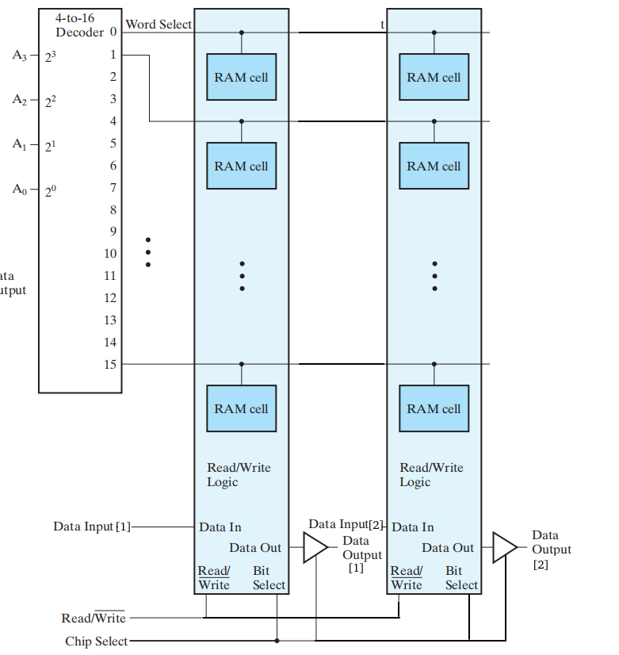
但是如果字数很多（比如我们的内存），因为每个字都有1位在一个RAM Slide，我们的用以共享读写的电路单元数量很多，我们的译码器会很复杂。我们用重合选择coincident selection解决这个问题。 比如下面这个8×2的电路被改装成了4×4的样子，我们用行选择器和列选择器共同来选择一个word。 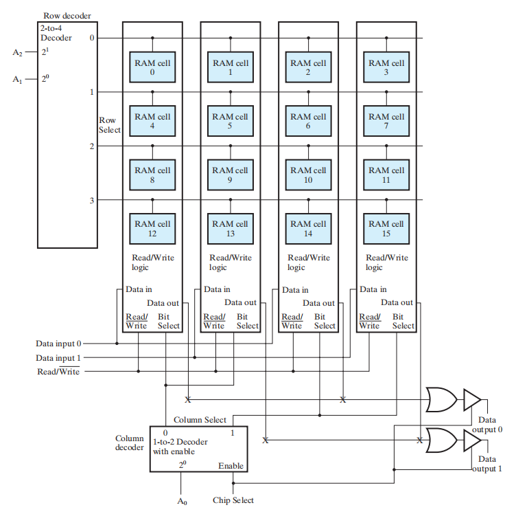
2. SRAM ICs Array SRAM芯片阵列
继续构造更大的RAM，我们用RAM芯片阵列。用RAM构造RAM。 RAM抽象如下，$Address = log_2(64*1024)$表示地址选择；CS=0表示芯片不被选中，输出是高阻态。如果CS=1，输出选中的8位数据。 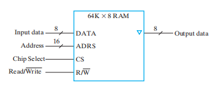 这样我们可以用4个64×8的RAM构成一个256×8的RAM，我们也可以改变word的长度，把地址线分开就好了。 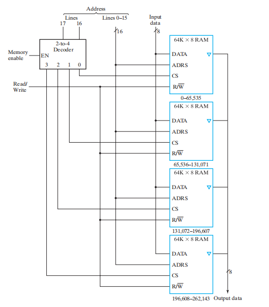
3. DRAM
DRAM和SRAM在上面的概念上有点类似。不过DRAM的存储单元不一样，而且还要考虑刷新的问题。 这是DRAM cell的模型和逻辑模型： 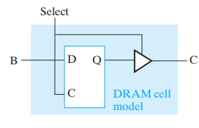 刷新一共有两种办法，可以每隔一段时间集中式刷新，也可以把全部的刷新分散在一段时间内进行。